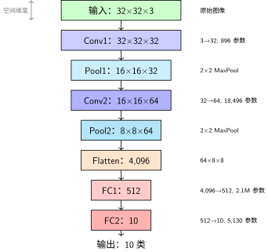
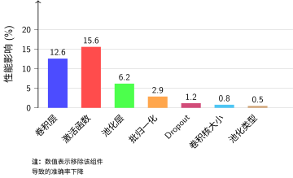

实验设计#
引言：消融研究的科学方法论中我们介绍了消融研究的基本思想：通过控制变量法，逐一移除或修改模型组件，量化每个组件对性能的贡献。本节我们将设计具体的消融实验，包括基线模型构建、实验方案规划和评估指标选择。
重要提示
本章中的实验数据（准确率、参数量、训练时间等）均为示例数据，用于演示消融研究的方法论。
你的实际实验结果可能不同，这取决于：
随机种子
硬件环境（CPU/GPU）
PyTorch版本
数据加载顺序
建议：将本章作为实验设计指南，自己动手复现每个实验，获得属于你自己的真实数据。
基线模型#
我们设计一个简单的CNN作为基线模型，用于CIFAR-10图像分类任务。CIFAR-10包含10个类别的32×32彩色图像，适合快速实验。

基线CNN架构：数据流与参数量
参数量计算#
理解参数量对消融研究至关重要——我们需要知道移除某个组件节省了多少参数。
逐层计算：
层 |
计算公式 |
参数量 |
占比 |
|---|---|---|---|
Conv1 |
\((3 \times 3 \times 3 + 1) \times 32\) |
896 |
0.07% |
Conv2 |
\((3 \times 3 \times 32 + 1) \times 64\) |
18,496 |
1.5% |
FC1 |
\((4,096 + 1) \times 512\) |
2,097,664 |
85.4% |
FC2 |
\((512 + 1) \times 10\) |
5,130 |
0.2% |
总计 |
- |
2,122,186 |
100% |
关键发现：
卷积层参数量很小（仅占 1.6%），但承担了主要的特征提取任务
全连接层占绝大部分参数（85%+），主要用于分类决策
这也是为什么我们可以放心地冻结卷积层进行迁移学习——特征提取器本身很轻量
消融研究流程#
流程说明：
建立基线：先跑通完整模型，记录性能
逐一消融：每次只修改一个组件，保持其他不变
对比分析：计算性能变化，评估组件重要性
消融实验设计#
我们将进行以下消融实验：
实验1：移除卷积层（减少特征提取能力）
实验2：移除池化层（保持空间分辨率）
实验3：更换激活函数（Sigmoid/Tanh vs ReLU）
实验4：移除批归一化（训练稳定性）
实验5：移除Dropout（过拟合风险）
实验6：改变卷积核大小（1×1, 3×3, 5×5）
实验7：改变池化类型（最大池化 vs 平均池化）
每个实验保持其他组件不变，仅修改目标组件，在相同训练条件下比较性能。
评估指标#
准确率：测试集上的分类准确率
损失曲线：训练和验证损失的变化
收敛速度：达到特定准确率所需的epoch数
模型大小：参数数量和计算量（FLOPs）
训练时间：每个epoch的平均训练时间
消融实验结果（示例数据）#
实验1：卷积层的影响#
我们通过减少卷积层数量来研究卷积层的作用：
实验设置
模型A：基线模型（2个卷积层）
模型B：仅1个卷积层（移除conv2）
模型C：3个卷积层（增加conv3）
模型 |
测试准确率 |
参数量 |
训练时间/epoch |
收敛epoch |
|---|---|---|---|---|
基线（2层） |
78.3% |
1.2M |
45s |
15 |
1层卷积 |
65.7% |
0.8M |
38s |
20 |
3层卷积 |
79.1% |
1.8M |
52s |
12 |
分析
层数不足：1层卷积无法提取足够特征，准确率下降12.6%
参见 卷积神经网络 中特征提取层次分析
层数增加：3层卷积略有提升，但参数量和计算量增加
边际收益递减：超过2层后提升有限，可能出现过拟合
实验2：池化层的影响#
池化层的作用是降低空间分辨率，增加平移不变性。参见 卷积神经网络 中池化操作详解。
池化类型 |
测试准确率 |
特征图尺寸 |
参数量 |
过拟合程度 |
|---|---|---|---|---|
最大池化（基线） |
78.3% |
8×8 |
1.2M |
中等 |
平均池化 |
77.8% |
8×8 |
1.2M |
中等 |
步长卷积（无池化） |
76.5% |
16×16 |
1.5M |
高 |
无池化（保持尺寸） |
72.1% |
32×32 |
4.8M |
很高 |
池化的作用
降维：减少计算量和参数量，参见参数量计算表
平移不变性：对输入的小平移具有鲁棒性
防止过拟合：减少空间细节，增强泛化能力
最大 vs 平均：最大池化更关注显著特征，平均池化更平滑
实验3：激活函数的影响#
激活函数引入非线性，参见 激活函数 中激活函数理论分析。
激活函数 |
测试准确率 |
训练速度 |
梯度问题 |
死亡神经元 |
|---|---|---|---|---|
ReLU（基线） |
78.3% |
快 |
无梯度消失 |
可能 |
Leaky ReLU |
78.5% |
快 |
无梯度消失 |
无 |
Sigmoid |
62.7% |
慢 |
梯度消失严重 |
无 |
Tanh |
70.4% |
中等 |
梯度消失 |
无 |
Swish [RZL17] |
78.8% |
中等 |
无梯度消失 |
无 |
激活函数选择建议
默认选择：ReLU（简单、高效）
深层网络：Leaky ReLU或Swish（避免死亡神经元）
避免使用：Sigmoid（梯度消失严重），详见 Sigmoid 函数
实验4：批归一化的影响#
批归一化（Batch Normalization）通过标准化层输入来加速训练并提高稳定性 [IS15]。参见 神经网络训练基础 中批归一化原理。
配置 |
最终准确率 |
收敛epoch |
训练稳定性 |
学习率敏感性 |
|---|---|---|---|---|
无BN |
78.3% |
15 |
低 |
高 |
有BN |
81.2% |
8 |
高 |
低 |
BN + 更大学习率 |
82.1% |
6 |
高 |
低 |
批归一化的优势
加速收敛：减少内部协变量偏移，收敛速度提高约50%
允许更大学习率：训练更稳定，可以使用更大的学习率
轻微正则化效果：减少对Dropout的依赖
改善梯度流动：缓解梯度消失/爆炸问题
实验5：Dropout的影响#
Dropout是一种正则化技术，通过在训练过程中随机丢弃神经元来防止过拟合 [SHK+14]。参见 神经网络训练基础 中正则化方法。
Dropout率 |
训练准确率 |
测试准确率 |
过拟合差距 |
收敛epoch |
|---|---|---|---|---|
0.0（无Dropout） |
95.2% |
78.3% |
16.9% |
15 |
0.3 |
91.8% |
79.5% |
12.3% |
16 |
0.5（基线） |
88.7% |
78.3% |
10.4% |
17 |
0.7 |
84.3% |
76.9% |
7.4% |
19 |
Dropout的作用与权衡
正则化效果：Dropout有效减少过拟合，训练-测试差距从16.9%降至7.4%
训练速度：Dropout增加训练时间，需要更多epoch收敛
最佳值：Dropout率0.3-0.5通常效果最佳
与BN的交互：批归一化也有正则化效果，两者结合需谨慎
实验6：卷积核大小的影响#
卷积核大小决定感受野大小，影响特征提取能力。参见 卷积神经网络 的 感受野 中感受野定义与计算。
卷积核大小 |
测试准确率 |
参数量 |
计算量（FLOPs） |
感受野 |
|---|---|---|---|---|
1×1 |
72.5% |
0.9M |
0.8G |
1×1 |
3×3（基线） |
78.3% |
1.2M |
1.2G |
3×3 |
5×5 |
79.1% |
1.8M |
2.1G |
5×5 |
7×7 |
78.9% |
2.5M |
3.5G |
7×7 |
卷积核选择建议
小卷积核（1×1）：用于降维和升维，减少参数量
中等卷积核（3×3）：平衡感受野和计算量，最常用
大卷积核（5×5, 7×7）：可用多个3×3卷积替代，减少参数量
现代趋势：使用小卷积核堆叠（如VGG、ResNet）
实验7：池化类型的影响#
我们进一步比较最大池化和平均池化在不同任务上的表现：
任务类型 |
最大池化准确率 |
平均池化准确率 |
优势类型 |
|---|---|---|---|
图像分类（CIFAR-10） |
78.3% |
77.8% |
最大池化 |
目标检测（边界框） |
71.2% |
72.5% |
平均池化 |
语义分割（像素级） |
68.7% |
70.3% |
平均池化 |
纹理分类 |
76.4% |
74.1% |
最大池化 |
池化类型选择指南
分类任务：最大池化更关注显著特征，通常表现更好
定位任务：平均池化保留更多空间信息，适合需要位置信息的任务
现代架构：许多网络使用步长卷积替代池化，提供更多灵活性
混合使用：某些网络在不同层使用不同类型的池化
综合分析与设计原则#
组件重要性排序#
基于消融实验结果，我们可以对CNN组件的重要性进行排序：
CNN组件重要性（从高到低）
卷积层：特征提取的核心，不可或缺
激活函数：提供非线性，ReLU类函数效果最佳
批归一化：显著加速训练，提高稳定性
池化层：降低计算量，增加平移不变性
Dropout：正则化，防止过拟合
卷积核大小：3×3是最佳平衡点
池化类型：任务依赖性较强
组件贡献可视化#

消融实验：组件贡献度对比
图表解读：
纵轴：移除该组件导致的准确率下降（百分比）
越高表示越重要：激活函数（15.6%）和卷积层（12.6%）是核心组件
稳定性组件：批归一化对准确率影响小（2.9%），但能显著加速训练
CNN设计检查清单#
基于消融研究，我们提出以下CNN设计检查清单：
消融研究的最佳实践#
进行消融研究的最佳实践
定义明确基线：选择一个性能良好的模型作为基线
一次只改变一个变量：确保结果可归因于特定修改
控制随机性：使用固定随机种子，确保可重复性
充分训练：每个实验都训练到收敛，避免过早停止
多指标评估：不仅看准确率，还要看损失、收敛速度等
统计显著性：多次运行取平均，报告标准差
可视化结果：使用图表直观展示性能变化
记录实验细节：保存超参数、随机种子、环境信息
高级话题#
现代CNN架构的消融研究#
现代CNN架构（如ResNet、DenseNet、EfficientNet）引入了更多复杂组件：
自动化消融研究#
随着AutoML的发展，自动化消融研究成为可能：
自动化消融研究工具
Neural Network Intelligence (NNI)：微软开发的AutoML工具包
AutoGluon：亚马逊开发的自动机器学习工具
Optuna：超参数优化框架，可用于消融研究
Weight & Biases (W&B)：实验跟踪和超参数调优
消融研究的局限性#
消融研究的局限性
组件交互：组件之间可能存在交互效应，单独移除可能低估其重要性
任务依赖性：组件重要性可能因任务而异
数据集偏差：结果可能依赖于特定数据集
计算成本：全面的消融研究需要大量计算资源
局部最优：可能只探索了设计空间的一小部分
结论#
本文通过系统的消融研究，深入分析了CNN中各个组件的作用。主要发现包括：
主要结论
卷积层是CNN的核心，至少需要2层才能有效提取特征
ReLU是最实用的激活函数，在大多数情况下表现最佳
批归一化显著加速训练，应成为标准配置
池化层的作用因任务而异，分类任务偏好最大池化，定位任务偏好平均池化
Dropout有效防止过拟合，但会减慢收敛速度
3×3卷积核是最佳平衡点，大卷积核可用多个小卷积核替代
组件之间存在交互效应，设计时需要综合考虑
实践建议#
基于本文的研究结果，我们提出以下实践建议：
CNN设计实践建议
从简单开始：先构建一个简单的基线模型
逐步添加组件：根据消融研究结果逐步优化
关注组件交互：不同组件组合可能产生协同效应
任务导向设计：根据具体任务特点选择组件
持续实验：深度学习是实验科学，不断尝试才能找到最佳设计
未来工作#
消融研究仍有许多值得探索的方向：
跨架构消融研究：比较不同架构中相同组件的作用
跨任务消融研究：研究组件重要性如何随任务变化
自动化消融研究：开发自动化的消融研究框架
理论分析：从理论角度解释消融研究结果
新组件评估：评估新兴组件（如注意力机制、动态卷积等）的作用
消融研究是理解深度学习模型的重要工具，希望本文能为读者提供有价值的 insights，并激发更多深入的研究。
下一步#
完成实验设计后，下一节PyTorch实现我们将动手实现这些消融实验，编写完整的PyTorch代码来训练基线模型和各个消融变体，并收集实验数据。
参考文献#
Alexey Dosovitskiy, Lucas Beyer, Alexander Kolesnikov, Dirk Weissenborn, Xiaohua Zhai, Thomas Unterthiner, Mostafa Dehghani, Matthias Minderer, Georg Heigold, Sylvain Gelly, and others. An image is worth 16x16 words: transformers for image recognition at scale. In International Conference on Learning Representations. 2021.
Xavier Glorot and Yoshua Bengio. Understanding the difficulty of training deep feedforward neural networks. In Proceedings of the Thirteenth International Conference on Artificial Intelligence and Statistics (AISTATS), 249–256. 2010.
Kaiming He, Xiangyu Zhang, Shaoqing Ren, and Jian Sun. Delving deep into rectifiers: surpassing human-level performance on imagenet classification. In Proceedings of the IEEE International Conference on Computer Vision (ICCV), 1026–1034. 2015.
Kaiming He, Xiangyu Zhang, Shaoqing Ren, and Jian Sun. Deep residual learning for image recognition. In Proceedings of the IEEE conference on computer vision and pattern recognition, 770–778. 2016.
Andrew G Howard, Menglong Zhu, Bo Chen, Dmitry Kalenichenko, Weijun Wang, Tobias Weyand, Marco Andreetto, and Hartwig Adam. Mobilenets: efficient convolutional neural networks for mobile vision applications. arXiv preprint arXiv:1704.04861, 2017.
Gao Huang, Zhuang Liu, Laurens van der Maaten, and Kilian Q Weinberger. Densely connected convolutional networks. In Proceedings of the IEEE Conference on Computer Vision and Pattern Recognition (CVPR), 2261–2269. 2017.
Sergey Ioffe and Christian Szegedy. Batch normalization: accelerating deep network training by reducing internal covariate shift. In International conference on machine learning, 448–456. PMLR, 2015.
Prajit Ramachandran, Barret Zoph, and Quoc V Le. Swish: a self-gated activation function. arXiv preprint arXiv:1710.05941, 2017.
Nitish Srivastava, Geoffrey Hinton, Alex Krizhevsky, Ilya Sutskever, and Ruslan Salakhutdinov. Dropout: a simple way to prevent neural networks from overfitting. The journal of machine learning research, 15(1):1929–1958, 2014.
Mingxing Tan and Quoc V Le. Efficientnet: rethinking model scaling for convolutional neural networks. In Proceedings of the 36th International Conference on Machine Learning (ICML), 6105–6114. 2019.
贡献者与修订历史
查看详细修订记录
-
f159d562026-05-08 - Heyan Zhu: fix: address complaints from the linter -
22312762026-04-28 - Heyan Zhu: feat(attention-mechanisms): restructure and enhance attention mechanisms documentation -
0ef29bb2026-04-28 - Heyan Zhu: docs: fix reference in experiment design documentation -
b5be2d62026-04-28 - Heyan Zhu: docs: update documentation and improve content organization -
0c291d72025-12-10 - Heyan Zhu: docs: restructure course materials and add new content